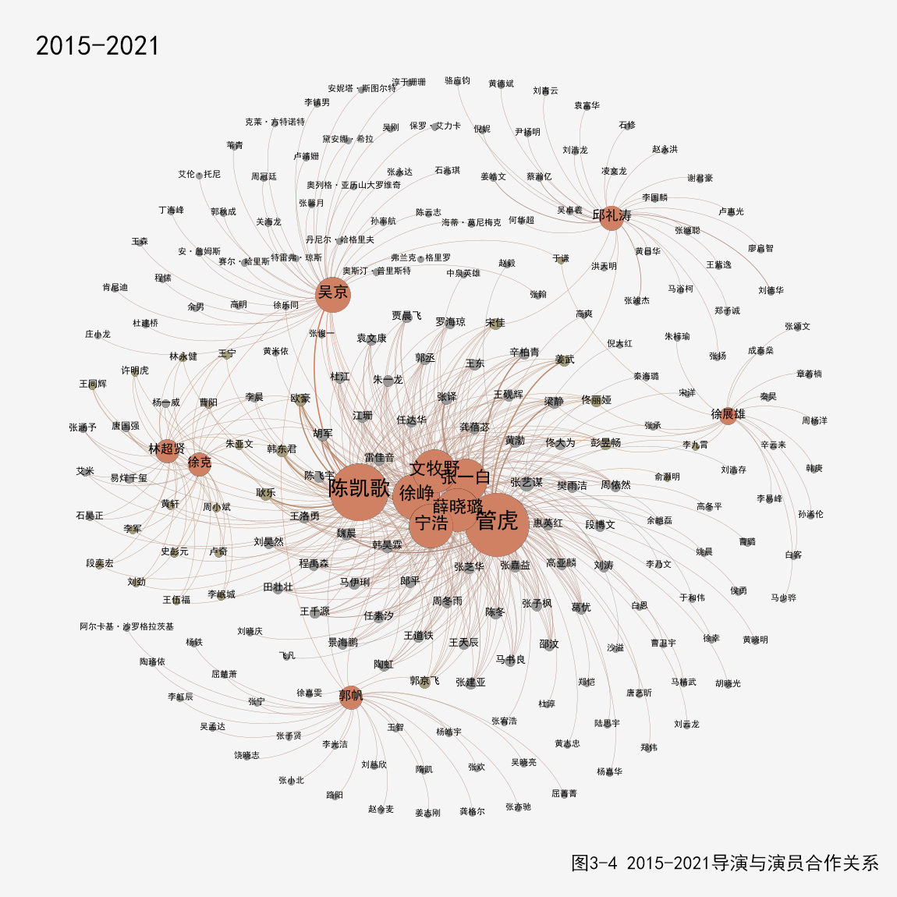

国庆档电影《长津湖》上映至今，票房高达56亿多，一举拿下影片总票房榜第2，豆瓣评分高达7.4分的好成绩，引发网友热评。据猫眼数据，中国电影票房总榜的前20名中，有8部是主旋律电影 。如今“主旋律电影”转型为“新主流电影”，更贴近青年群体，新形态符合国家文化生态建设要求和人们精神需求，会是未来的电影制作趋势。
主旋律电影发展一共经历了四个阶段
|
|

|
|
|
|
主旋律电影并非一直在重现历史，一成不变,它与时代脉搏同频共振。
中国主旋律电影受到年轻人追捧
1987年诞生许多经典电影，在2001年到2014年两极分化严重，优秀作品也有，但更多的是普通的电影。 从2015年开始，作品整体评分较好，虽然不及87年的经典作品，但是正在全力接近。
制作团队资源共享，向专业化发展
电影《1921》引发了网民关于主旋律电影究竟该不该请流量明星的讨论。经统计发现《1921》中的110位 主演只有18位参演到后续的电影演出中，占比16%。这部电影片面追求“全明星阵容”，使角色和明星的关系出现了倒置——不是明星为角色服务，而是角色为明星服务。
- 
导演由21世纪前的单独制作到现在的合作完成一部电影。张艺谋、陈凯歌等优质导演仍然在创作优秀的主旋律电影，同时一批新的导演涌现出来，为我们的主旋律电影融入更多的中国故事、中国价值。 至今更多的优质演员被发现，开始参演多部主旋律电影，努力呈现出更好的电影效果。 导演和演员双重身份的出现，作为导演，让爱国主义电影回归主流，带动主旋律电影繁荣；作为演员，融入每个角色，传递真情实感。 中国的主旋律电影在导演的协作下、在各个演员的共同努力下会更加成熟，电影思想和内容契合度程度会逐步提高，在不远的将来会有更多优质的主旋律电影呈现出来。
制作题材多元化
近些年主旋律电影的发展存在两个思路，一种是主旋律电影的商业化和类型化；另一种思路是一些商业片主动向主旋律题材靠拢，并在思想性上突出了爱国主义等社会主义核心价值观念的传达。 主旋律往类型化叙事发展。例如《红海行动》、《战狼》等影片是动作类型化最明显的主旋律电影，这些影片从叙事节奏、人物刻画到视觉效果层面，都明显具备了国际主流大片的基本特征：无论是紧张刺激的搏斗，还是扣人心弦的剧情和气势恢宏的场面，无不震撼观众，也在全国点燃了爱国主义热情。 主旋律电影由最初的说教式内容、直白的意识形态宣讲，到现在的以小见大，将爱国主义元素融入电影，巧妙传递家国情怀，更加调动了中国观众的强烈的民族认同感，受到观众的喜爱。 主旋律电影的题材更加宽泛了，动作、犯罪、战争等各类题材融入主旋律内容。
从1987年至今，主旋律电影作为文化产品的消费性日益突出，也逐渐呈现娱乐化、商业化和平民化的倾向，越发贴近年轻人的精神需求。 主旋律电影提出至今已有三十五年，近年来更多主旋律电影利用“小切口、大视角”，以人物和细节打动人，将中国故事讲得越来越好。
数据新闻团队：
沈海蓉：选题讨论、数据解读、可视化、网页搭建
王嘉雯：选题讨论、新闻文本、数据解读、可视化、网页搭建
陈升东：选题讨论、新闻文本、原始数据获取
数据来源：
1.豆瓣电影：https://movie.douban.com/
2.猫眼专业版：https://piaofang.maoyan.com/dashboard/movie
统计时间：2021.11.2
素材来源：pinterest